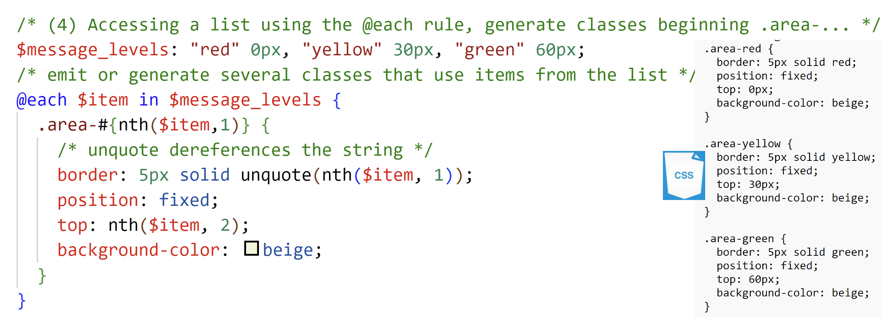
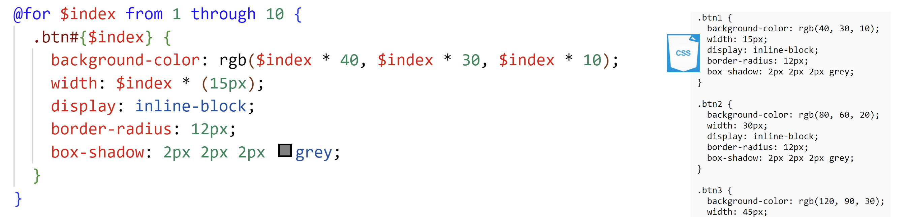
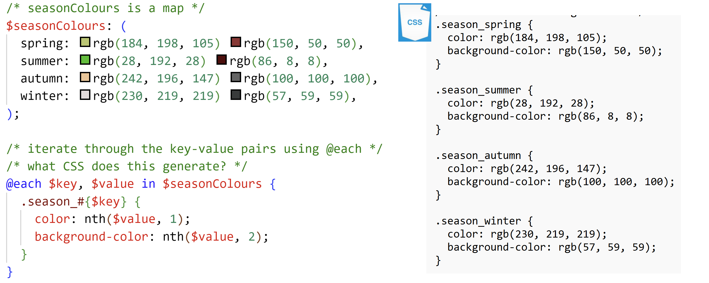
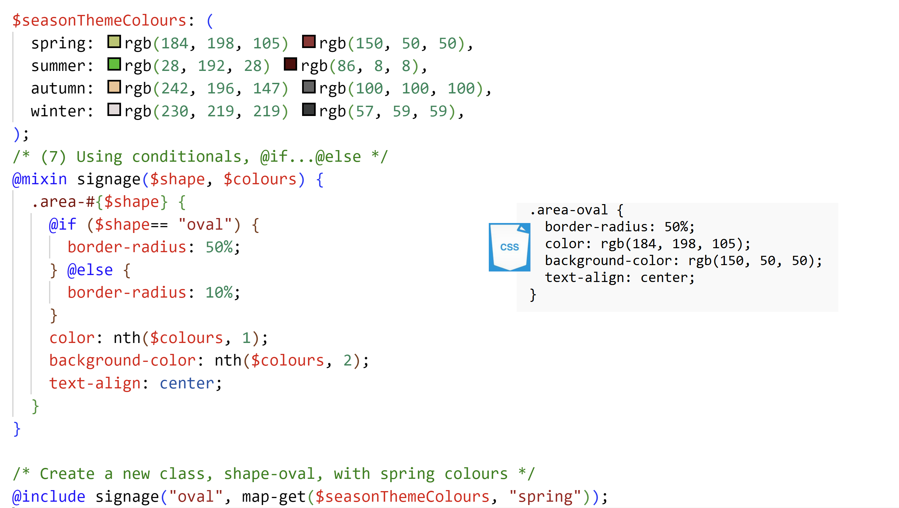

A CSS pre-processor is like a stylesheet programming language. CSS preprocessors provide features that CSS does not, advanced features that developers can use to create CSS, while spending less time on the whole process than they would with plain, regular, CSS. Slowly, CSS is evolving to incorporate some of these additions.
We introduced Less (Leaner style Sheets) and SASS (Simply Awesome Style Sheets). Less works on a JavaScript engine and can be compiled dynamically. You can include a .Less file in your .html file directly. SASS has 2 variants, one(SASS) uses indentation to delineate the scope of style rules, the other(SCSS) uses curly braces ({...})
Ultimately, the browser only understands CSS. All preprocessor code has to be transpiled to CSS.
Using Variables
Variables are also now defined in CSS.
Using Less, variables are preceded with @, and directly referenced in CSS, so long as the Less content has been included. If the content of the file, variables.less, is described below,
@backgroundColor: lightgrey;
@navColor: orange;
@footerColor:lighten(grey, 60%);
... and this file is included in a CSS file,
@import url(./variables.less);
then the variables can be directly referenced after being compiled within the browser, using the @ symbol, in a css file,
body{
background-color: @background_color;
}
In the SCSS variant of SASS, we use the $ to precede a variable declaration.
$header_width: 50%;
$base_unit: 10px;
$header_height: ($base_unit * 5) + 10px;
These are then referenced after compilation to CSS,
#headerStyle {
position: relative;
height: $header_height;
...
}
Using Mixins
Mixins allow the use of multiple classes, subsumed within one class or id.
With Less, given classes bordered, neely_word_format, vertically_aligned, below
border-left: 2 * @base_unit;
...
}
...
}
padding-top: 30px;
}
... id word_of_the_day can be defined to include those classes.
#word_of_the_day {.bordered();
.neely_word_format();
.vertically_offset();
}
Nesting Selectors
Nesting is the inclusion of selectors within a parent selector, so style rules apply to elements within that parent selector only.
Below, note how Less handles the nesting of class logo and selector h2, scoped only for the id, lessonArea. The media query applies to id, lessonArea.
#lessonArea {
margin-top: 5px;
.level2 {
font-size: 16px;
}
.logo {
width: 8 * @base_unit;
background-color: antiquewhite;
background-size: contain;
}
h2 {
background-color: antiquewhite;
}
@media (max-width: @small_device_width) {
width: 95%;
h1::after {
content: "\1F4f1";
}
}
Using Preprocessor Functions
In Less, the lightness of the colour of background can be modified,
background-color: lighten(@mtVernon_background_colour, 15%);
Multiple other such functions make styling more flexible for the developer.
Interpolation & Building Selectors
In SCSS, interpolation aids in the generation of specific classes and makes SCSS much more flexible in terms of the ability to generate a range of styling.
In SCSS, interpolation is done with this syntax,
#{ ... }
where the variable is inside the curly braces, {..}.
In the following SASS example, we generate a set of heading styles, using interpolation to name the selector. We use a mixin, and pass in a value to be used for the font.
Lists & Preprocessors
A list is a group of objects, like an array in JavaScript. The content of a list is accessed with a subscript or index.Lists with SCSS are 1 based - first element starts at index 1.
Lists in SCSS are defined, using multiple formats, below.

Use a list to generate custom CSS:

Iterating, @each & @for Directives
List items are accessed with a 1-based index, so loops can be used to iterate through lists. One technique is the @each directive in SCSS.
The SCSS @for directive support use of numeric ranges.
Using Preprocessor Maps
Maps are data structures composed of key value pairs (like dictionaries). Maps bring organization and allow for greater flexibility in styling with associated values, like seasonal color themes.
Using Conditionals
Conditionals allow specificity in generating style rules. Conditionals can be used with lists, maps and other features of a preprocessor, to promote creation of style rules corresponding to precise needs.
